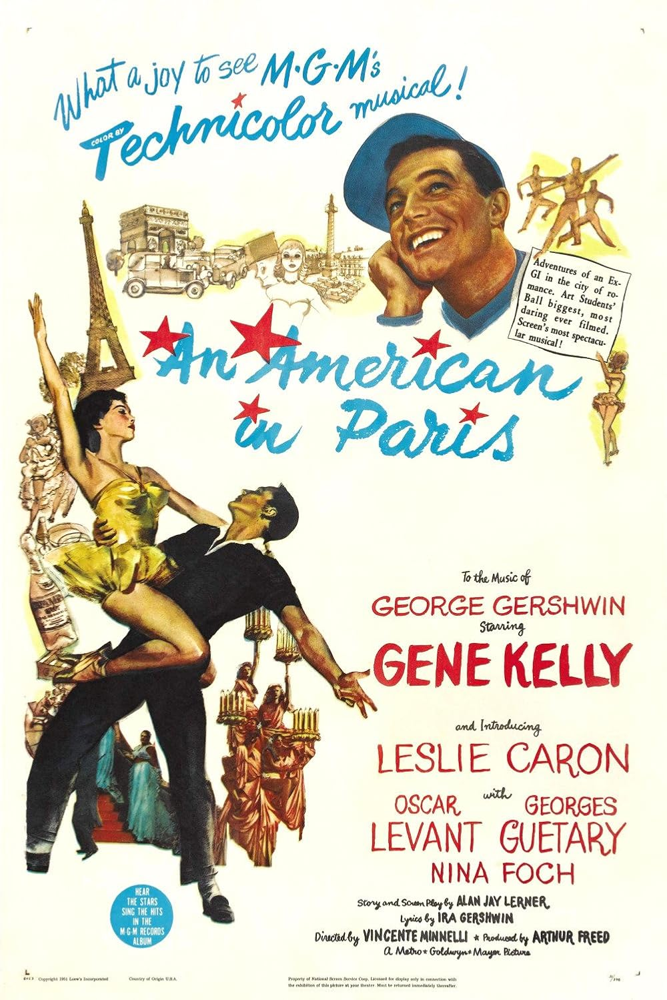

An American in Paris
24th Academy Awards
(Oscars 1952)
8 Nominations, 6 Awards
| Nominations | ||
|---|---|---|
| Category | Nominees | Result |
| Best Motion Picture | Arthur Freed | Won |
| Directing | Vincente Minnelli | Nominated |
| Writing (Story and Screenplay) | Alan Jay Lerner | Won |
| Cinematography (Color) | Alfred Gilks and John Alton | Won |
| Film Editing | Adrienne Fazan | Nominated |
| Art Direction (Color) | Cedric Gibbons, Edwin B. Willis, Keogh Gleason, and Preston Ames | Won |
| Costume Design (Color) | Irene Sharaff, Orry-Kelly, and Walter Plunkett | Won |
| Music (Scoring of a Musical Picture) | Johnny Green and Saul Chaplin | Won |